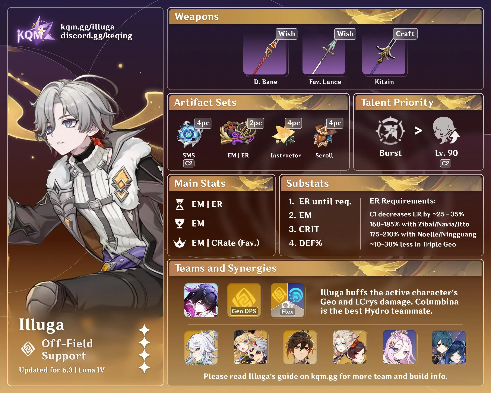
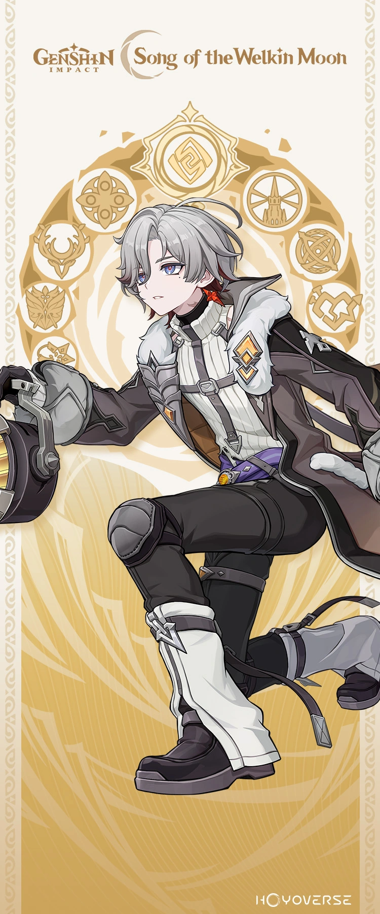

Illuga's Build:

Illuga is a 4 star geo/lunar-crystalize support who's main use right now is supporting Zibai's DMG and moonsign, making her skill last longer. His skill provides geo application, putting a songbird on the ground that shoots out geo application every few seconds. When you hold his skill, you can choose where it will be placed. His ultimate boosts any normal ATK, elemental skills, and elemental bursts and does even more DMG if the DMG dealt is lunar-crystalize. So you can use him with different teams, his buffs will just be weakened. He can also boost CRIT DMG and RATE for 20 seconds.

Main Affixes:
- EM
- ER
- DEF%
- ANY (not needed)
Best Weapons
Finding a weapon for Illuga shouldn't be a challenge since he does not have a signiture weapon. He mainly needs EM so any weapons with EM you can just throw onto him. If you are struggling to find an EM weapon, you can substitute EM for ER. Additionally, you can even use a DEF% weapon. You should prioritize EM and DEF% though. Er is good, but he scales off of EM and Def% all together.
- Favonius Lance
- Dragon's Bane
- Kitain Cross Spear
- Staff of the Scarlet Sands
More information about Illuga's build can be found below:
Illuga's Build